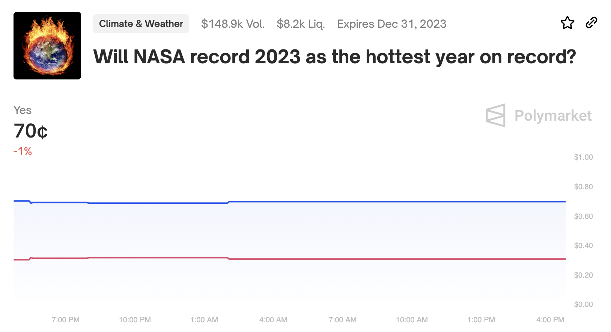
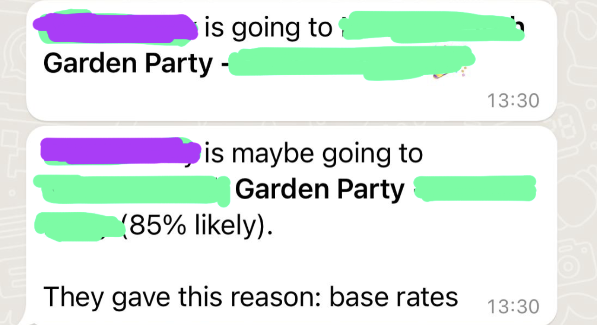

Jul 19th, 2023
- Bad Events
- What do Climate Change skeptics think of this market? Like, what do they think in response?

- Get you a man who

{:height 218, :width 317}
- anecdote my friend tells me that in their work in East Africa polygamy is the dominant relationship style. It's pretty patriarchal, but the men all have multiple wives/girlfriends and many of the women have other boyfriends.
- It's seen as unacceptable to demand someone only sleeps with you
- monogamy is a western Christian norm